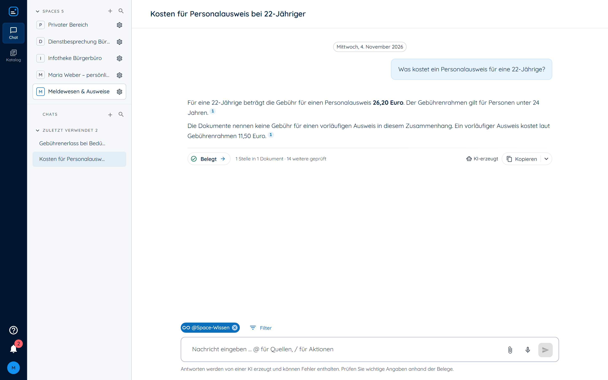
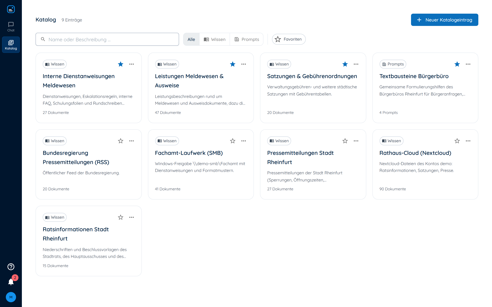
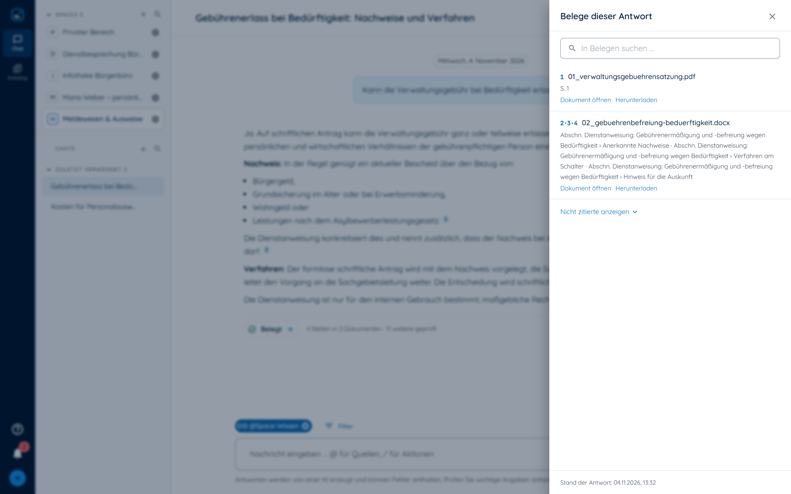
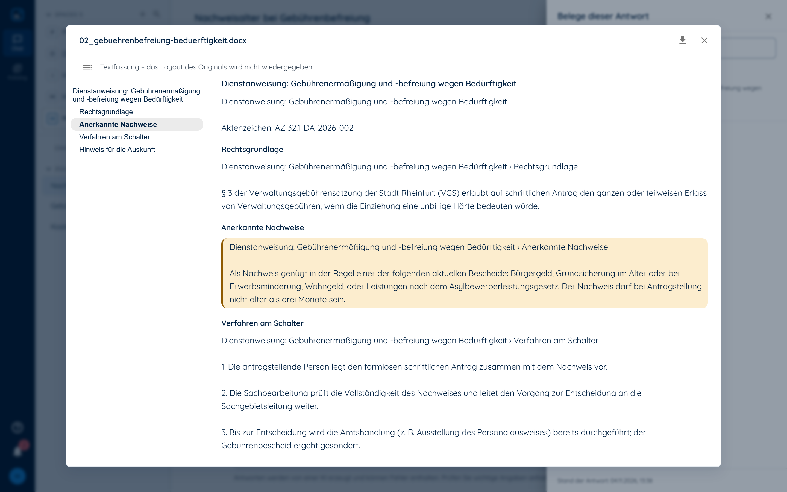

Souverän, bis hin zu air-gapped
Daten verlassen das Haus nicht. Modelle laufen auf eigener Hardware, ein Offline-Bündel bringt OPAA in Netze ohne Internet.
Docker Compose · Kubernetes · Offline-BündelOPAA ist der souveräne KI-Assistent für die öffentliche Verwaltung. Durchsuchen Sie die Bestände Ihres Hauses, mit geprüften Fundstellen, im eigenen Rechenzentrum, auch ohne Netzanbindung.

Daten verlassen das Haus nicht. Modelle laufen auf eigener Hardware, ein Offline-Bündel bringt OPAA in Netze ohne Internet.
Docker Compose · Kubernetes · Offline-BündelNetzlaufwerk, SharePoint, Confluence, Nextcloud, Web und RSS werden zu Bibliotheken, die sich selbst aktuell halten.
11 Konnektoren · PDF, Office, Markdown, CSVGruppen aus dem Verzeichnisdienst, Rollen je Space und Bibliothek. Eine Antwort enthält nur, was die fragende Person lesen darf.
Dieselbe Frage, zwei Konten, zwei belegte AntwortenJede Aussage trägt eine Fußnote, jeder Beleg wird gegen die Fundstellen geprüft. Was nicht belegbar ist, wird nicht behauptet.
Ein Klick führt zur markierten Stelle im DokumentOPAA sucht in den Bibliotheken, die dem Space zugeordnet und für die fragende Person lesbar sind.

Jede Wissensbibliothek nennt Quelle, Umfang und Zuständige. Die Demo „Stadt Rheinfurt“ verbindet ein Fachamt-Laufwerk (SMB), eine Rathaus-Cloud (Nextcloud), Ratsinformationen, Pressemitteilungen per RSS und Textbausteine als Prompt-Bibliothek.
Ein Space bekommt genau die Bibliotheken zugeordnet, die er braucht. Was nicht zugeordnet oder nicht lesbar ist, taucht in keiner Antwort auf.
Belege lassen sich direkt im Dokument prüfen, die Fundstelle ist markiert.


Vorlagen für die Einführung, dazu Faktenblätter aus dem Programmcode je Release.
DSFA, Verarbeitungsverzeichnis, Löschkonzept, TOM.
Muster-Dienstvereinbarung, Informationsmappe Personalrat.
Grundschutz-Modellierung, Sicherheitsnachweise, CRA, NIS2.
Einstufungshilfe, Nutzungsrichtlinie, Schulung.
Vorlagen, keine Rechtsberatung. Alle Unterlagen unter docs/behoerden.
Quelloffen, an keine Bezahlstufe gebunden.
Dieselbe Software für 40 wie für 4.000 Beschäftigte, auch ohne Netzanbindung.
Kein personenbezogener Auswertungspfad, keine Ranglisten.
Die Antwort stammt nachweislich aus der zitierten Stelle.
Nach BITV, in jedem Build automatisiert geprüft.
Docker Compose oder Kubernetes, Einrichtung im Browser.
.env.docker anlegendocker compose up